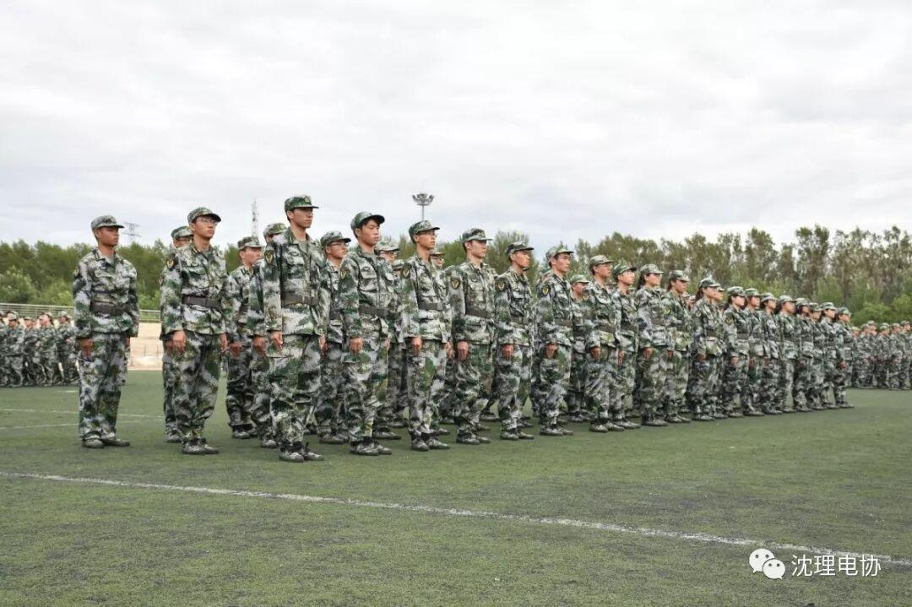
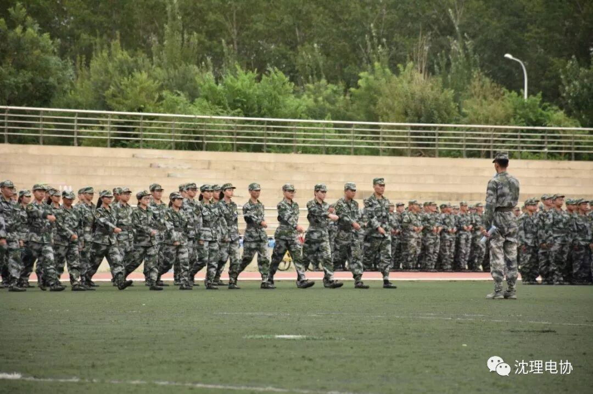
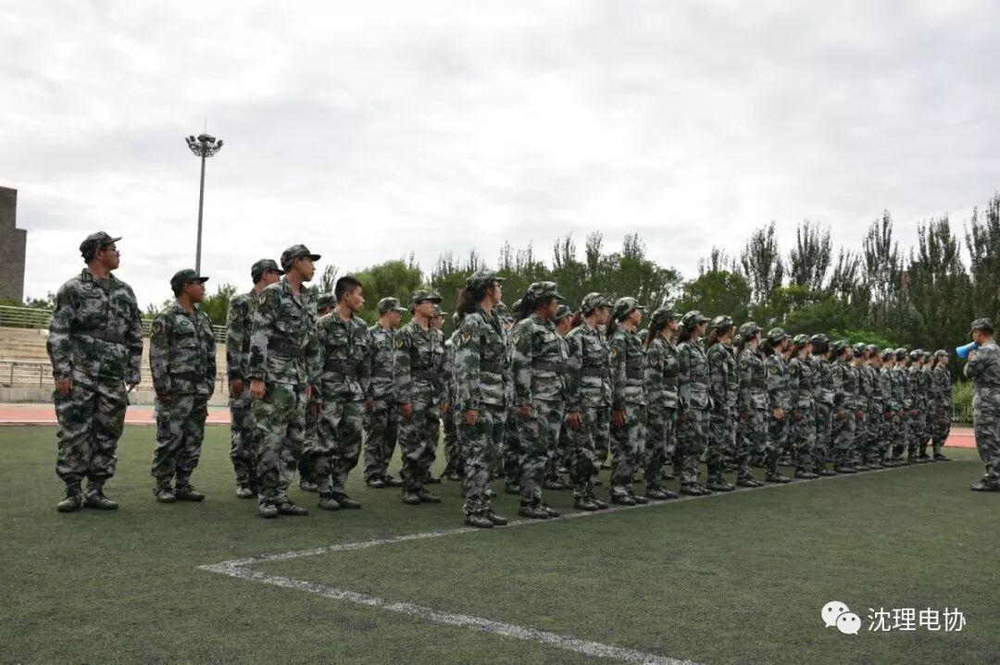
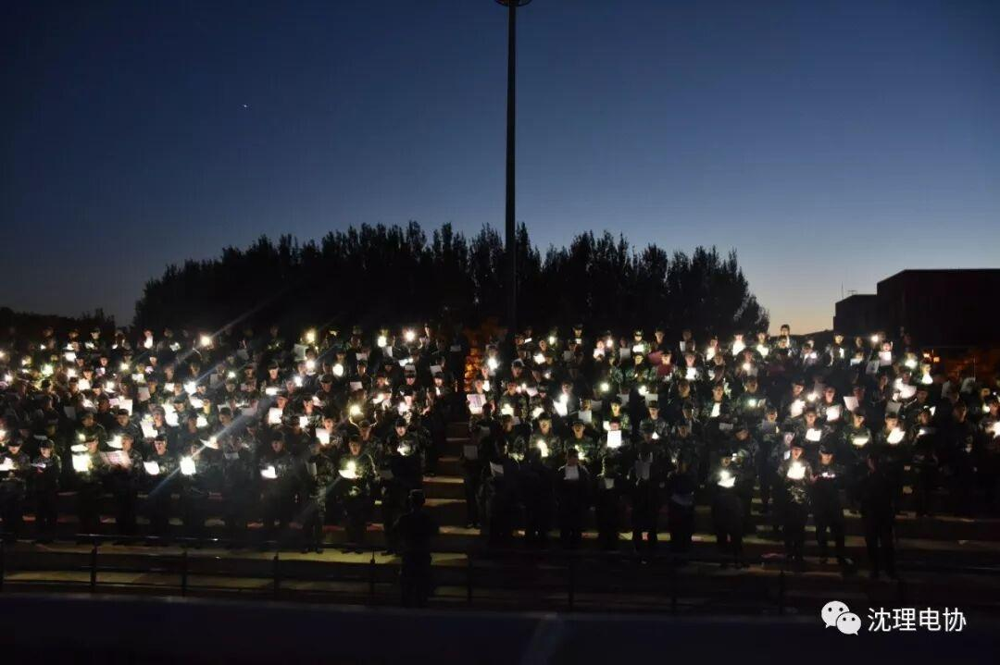
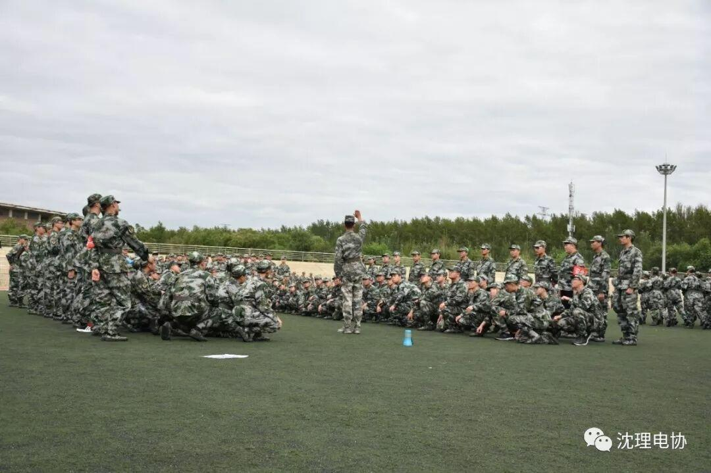

军训 | 目光所至都是你
新的一学年开始，当电协在学期开头忙里忙外时，大一新生也化身绿衣大军浩浩荡荡挺入我们的皇家理工境内，为青春校园注入一股新的力量，即使身为学长学姐的我们在操场、食堂悲悯直叹“那本是朕的江山，朕的子民啊！”，也丝毫不能阻碍他们元气满满地开始他们大学的第一课——军训。
在中暑与腿软中，在晕倒与流汗中，千篇一律的站军姿，棱角分明的豆腐块，阵容森严的方阵走，别具一格的军体拳，中气十足的呐喊声，便构成了这场军训的主干。


追剧？打游戏？看动漫？不存在的。回到宿舍只想上演一个葛优瘫，回避了分外照顾自己的烈日，躲开了教官关切的目光，只盼裹在被子里与世隔绝，快点开始和周公下棋，然后接受更加热烈的洗礼。

看着你们挺拔的英姿，听着你们清澈的歌声，那认真倾听讲解的模样，那踏实地面的双脚。我们不得不感叹道：果真是长江后浪推前浪，一浪更比一浪高。


军训的苦，军训的累，我们都知道，你们或许欢愉，或许苦恼，但兵工精神从来不是虚无缥缈的，只有经历了这些你们才是真的跨过了与从前的鸿沟，弘治励学德才并蓄的道理，希望你们日后渐渐明白。
编辑：罗杰
图片：电协信息部